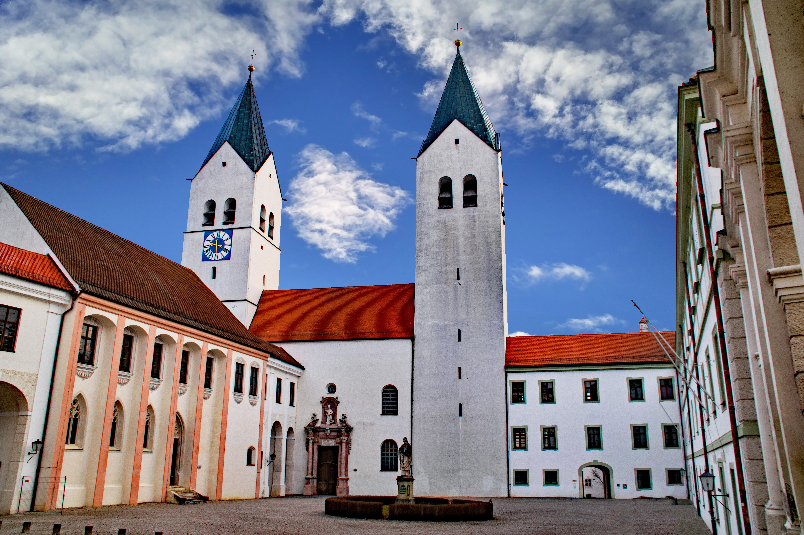
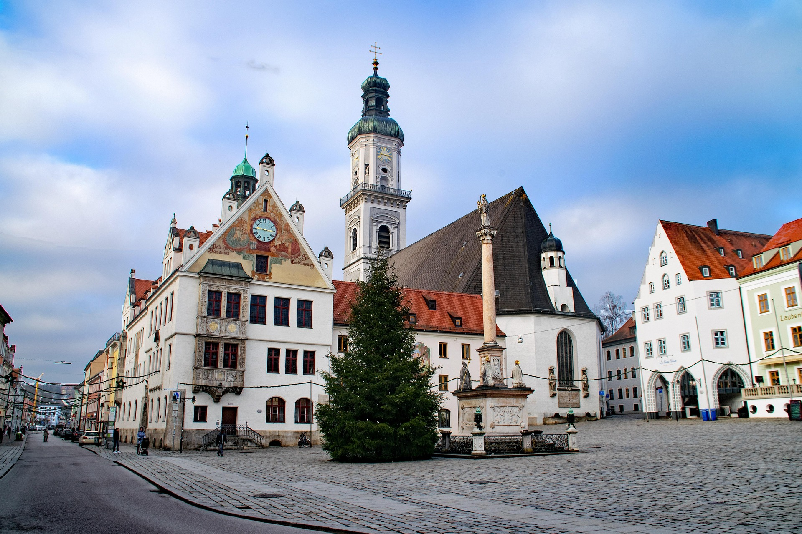
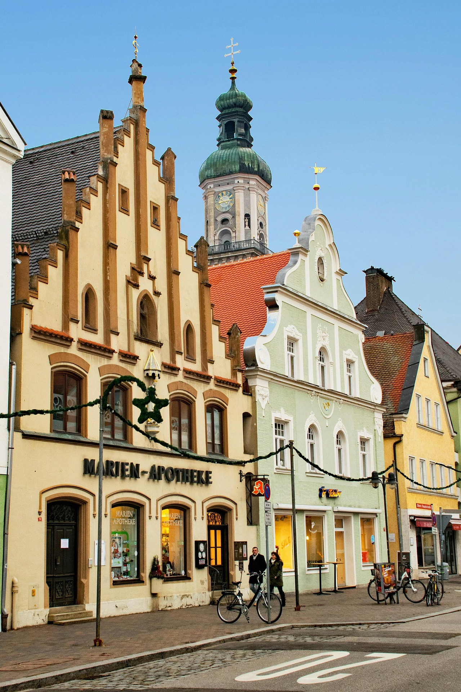
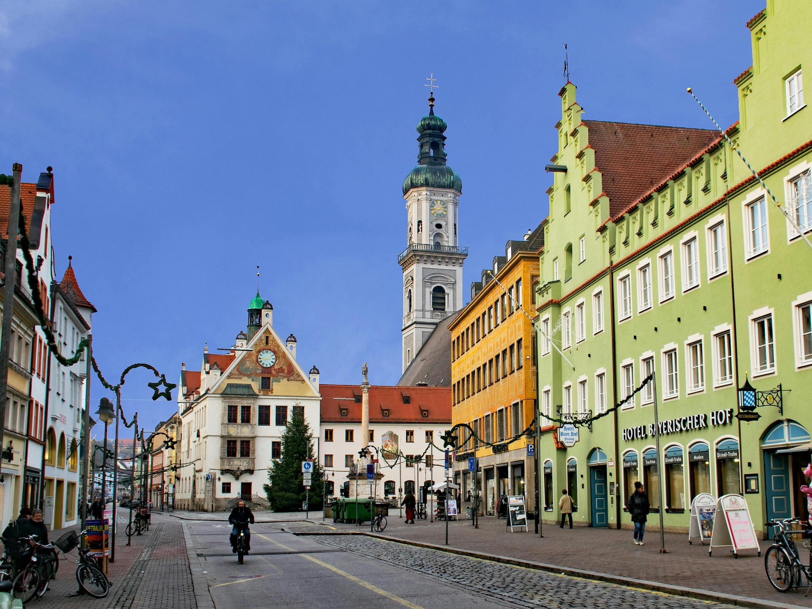
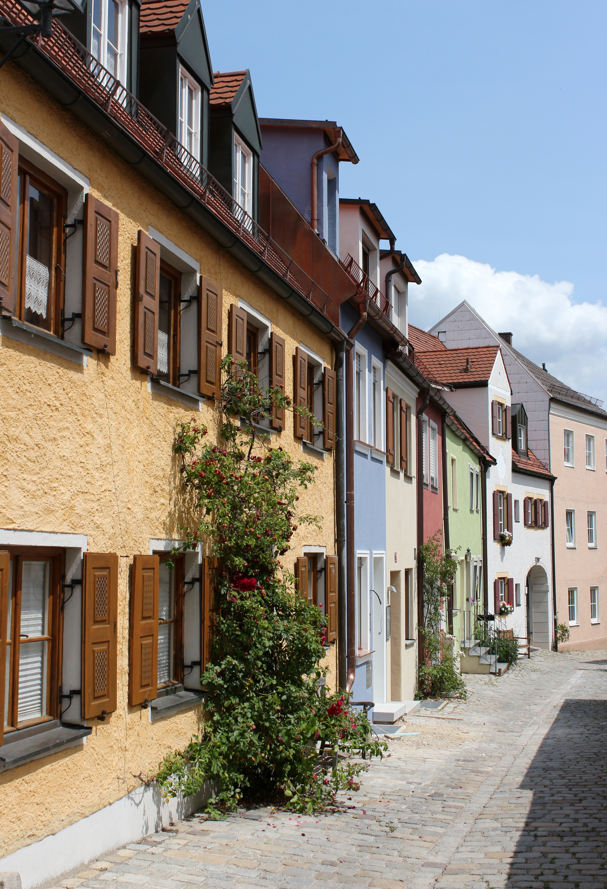

Фрайзинг
Добро пожаловать в медиагалерею нашего информационного портала. Здесь собраны актуальные фотографии города Фрайзинг, живописные виды достопримечательностей Баварии и фотоотчеты, отражающие будни нашей волонтерской организации в Германии.
Каждый кадр демонстрирует гармонию старейшего баварского города, его архитектурное наследие и то, как развивается наше активное сообщество соотечественников во Фрайзинге. Мы помогаем людям адаптироваться к новой культуре и сохраняем самые яркие моменты совместных встреч и интеграционных мероприятий.





Атмосфера Баварии и наши проекты
Изучая представленные фотографии Германии, вы сможете поближе познакомиться с регионом, где работает проект FreisingUA. Мы регулярно обновляем наши альбомы, добавляя кадры рабочих встреч, на которых обсуждаются вопросы легализации документов, апостилирования и координации медицинской помощи. Наша цель — сделать процесс интеграции наглядным, открытым и понятным для каждого.